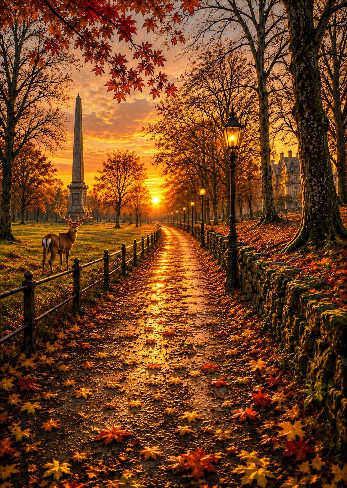

I am alone without you in time and space,
a lost soul with no special place.
You think that it’s all done and gone
and you have no reason to be undone,
Me thinks ‘tis a small but necessary feeling that you have none to be proud of.
While I am searching for a way and pray you can hear me dream for you,
I am still lost, miserable
and with no recourse yet to run:
I can tell I have lost myself,
my sense and my being is gone,
as you wished,
numbed by the knowing that I cannot be loved by the one I do,
so dearly.
And faith in God for me is not enough.
The lover’s leaves of autumn are crisp and dry;
with the birth of winter now they are cold and bare,
I have no soul to tell my tale and no wishes left to be happy,
without you,
I hate this life’s experience with such a feeling which makes me breathe another breath.
Yet my being curls into itself, stops looking for good things,
envelopes itself into a corner.
And wishes to cease the rise and fall of its crimson, spoiled chest.
Like an animal hunted,
blooded I am hurting,
bleeding my love and there’s no replenishment,
oozing away my love,
which will unfold for you
and caste am I in a die which will not yield
and suffer is all I can chide.
This is a life unwanted,
an experience only wished upon the dammed
and yet fair lady I beseech you for a hand,
to kiss me some blessed truth you have to dispense,
and can you really be so cruel
and not make exception to your crass religious rules?
Maybe you mean to be kind with your distance
and your silence and your inaction,
and All this countenance is a providence of your might or right or just plain fright?
It’s really not clear to me anymore whether you do me with fair justice,
as abandon do I feel,
least more would a cock crow three times for this denial for a more worthy soul.
And nobody am I,
Yet have I no right or position to ask
or expect anything less from one who does (or perhaps does not) love me?
You don’t right?
Love me?
Do You?
And this is the truth I have to face:
that your feelings for me,
my body, my mind, my heart and soul:
you have none
and your silence is deathly golden
and so softly spoken.
So I am left to grieve in your abstinence
and cry and moan is all I do and well am I at that,
a skill of super sublime,
its an art of desire without which I have no more lust, love
or feelings for you
or for any beauty which might do me some good.
So in closing you can tell my heart is truly broken,
sad I am to tell you this in rhyme which has no joy or song
and with deep sense of regret that in moving to you I am not a part of you
and ‘tis only my own fantasy which all said and done means nothing to you.